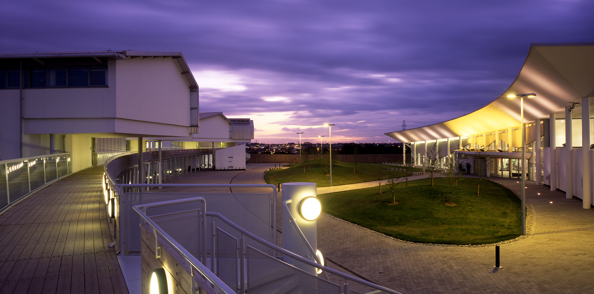
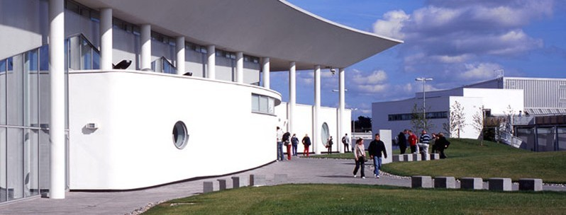

1 / 3

History
2 / 3

Students
3 / 3

Campus
ITB opened it's doors in 1999 and since then has grown as a staple in teaching in Dublin, and is an important part of the drive for the Technological University of Dublin, which it will be part of in January 2019.
Horticulture
Our wonderful college is becoming part of Ireland's first Technological University! Find out more here.